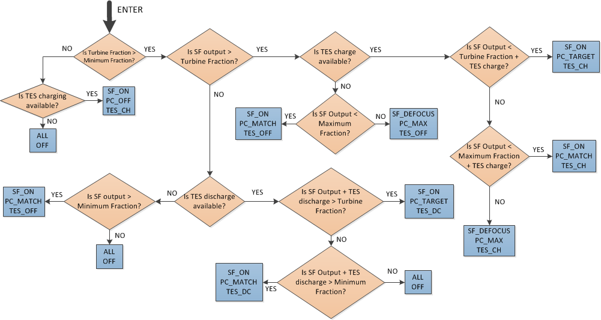
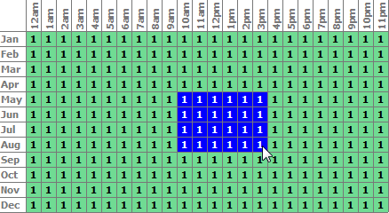
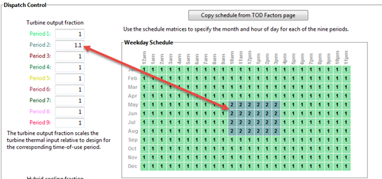

System Control#
The System Control inputs determine the operating parameters of the system.
Note
The physical trough and molten salt power tower models in SAM use a power cycle and system dispatch model that does not support thermocline storage or fossil backup because they are not incorporated into the dispatch controller logic. If you want to model thermocline storage or fossil backup, you can use the legacy version SAM 2015.6.30 for power towers or SAM 2018.11.11 for the Physical Trough model, available on the SAM website Download page.
Plant Energy Consumption#
- Fraction of gross power consumed at all times, MWe/MWcap
A fixed electric load applied to all hours of the simulation, expressed as a fraction of rated gross power at design from the System Design page.
- Balance of Plant Parasitic, MWe/MWcap
Losses as a fraction of the power block nameplate capacity that apply in hours when the power block operates.
- Aux heater boiler parasitic (MWe/MWcap)
A parasitic load that is applied as a function of the thermal output of the auxiliary fossil-fired heaters.
The BOP and auxiliary heater parasitic at design are calculated as follows:
Parasitic Loss (MWe) = Design Cycle Gross Output (MWe) × P (MWe/MWcap) × Factor × ( C0 + C1 × Gross Power Ratio + C2 × Gross Power Ratio² )
Where Gross Power Ratio is calculated in each time step as Cycle Gross Output in Time Step (MWe) / Design Cycle Gross Output (MWe).
System Availability#
System availability losses are reductions in the system’s output due to operational requirements such as maintenance down time or other situations that prevent the system from operating as designed.
Note
To model curtailment, forced outages or reduction in power output required by the grid operator, use the inputs on the Grid Limits page. The Grid Limits page is not available for all performance models. For the PV Battery model, battery dispatch is affected by the system availability losses. For the PVWatts Battery, Custom Generation Profile - Battery, and Standalone Battery models, battery dispatch ignores the system availability losses.
To edit the system availability losses, click Edit losses.
The Edit Losses window allows you to define loss factors as follows:
Constant loss is a single loss factor that applies to the system’s entire output. You can use this to model an availability factor.
Time series losses apply to specific time steps.
SAM reduces the system’s output in each time step by the loss percentage that you specify for that time step. For a given time step, a loss of zero would result in no adjustment. A loss of 5% would reduce the output by 5%, and a loss of -5% would increase the output value by 5%.
Dispatch Optimization#
The dispatch algorithm determines the timing of energy delivery from the solar field and to and from the thermal energy storage system. When the field is producing more thermal power than required by the power cycle during times when storage is full, the algorithm defocuses heliostats in the field to reduce the field output power. SAM reports the field optical focus fraction fraction, receiver incident thermal power, TES charge state, and other variables in the Results that you can use to see how the system operates.
When you enable dispatch optimization, SAM automatically determines when the system defocuses heliostats in the field, stores thermal energy from the solar field, or when it dispatches thermal energy from the thermal energy storage system to the power cycle.

When you run a simulation without enabling optimization, SAM attempts to operate the system so that the power cycle output matches the dispatch schedule you define. If the turbine dispatch fraction for a given time step is greater than the minimum turbine fraction and the storage system is full, it will dispatch energy to the power cycle up to the turbine output fraction for that time step, and defocus the field if the field thermal power output exceeds the amount required.
- Enable dispatch optimization
Check the box to enable automatic optimization.
- Time horizon for dispatch optimization
The time period that SAM uses as a basis for the optimization. Default value is 48 hours.
- Frequency for dispatch reoptimization
The time period to determine how often SAM runs the optimization. Default value is 24 hours.
- Cycle startup cost penalty, $/start
The penalty in the dispatch optimization algorithm associated with starting up the power cycle. The cost is applied any time the power cycle goes from an “off” state to an “on” or “standby” state in the next time period. This penalty affects the optimal solution, which seeks to maximize revenue. This value does not affect actual operating costs or the calculated SAM financial metrics.
- Receiver startup cost penalty, $/start
The penalty in the dispatch optimization algorithm associated with starting up the solar field and receiver. The cost is applied any time the solar field goes from an “off” state to an “on” state in the next time period. This penalty affects the optimal solution, which seeks to maximize revenue. This value does not affect actual operating costs or the calculated SAM financial metrics.
- Power generation ramping penalty
The penalty imposed for changing power cycle electrical production from one time step to the next. By penalizing changes, the resulting dispatch profile exhibits improved stability and is potentially more realizable in practice. Increasing this penalty may reduce achieved revenue for the project. This penalty affects the optimal solution, which seeks to maximize revenue. This value does not affect actual operating costs or the calculated SAM financial metrics.
- Objective function time weighting exponent
The relative weight due to time in the dispatch optimization objective function. A weighting factor of 0.99 indicates that the objective function terms are multiplied by 0.99*t* for each timestep t in the optimization horizon (48 hours, by default). A value of 1.0 indicates no time weighting, a value less than one indicates that, all things equal, generation is preferred sooner than later, and a value greater than one indicates that generation is preferred later than sooner. As the value is displaced from unity, the optimization algorithm is typically able to solve the dispatch problem more quickly, but the resulting revenue may decrease. Note that a value of 0.99 corresponds to an objective discounting in the 24th time period (one day ahead) of 0.99*24**= 0.79*, which is to say that the optimization routine values revenue generated in hour one 21% more than in hour 24, though revenue multipliers and efficiency terms may be identical.
- Maximum branch and bound iterations
Limits the number of iterations in the optimization routine. If you are experiencing problems with the optimization, you can increase the number. The default value is 30,000.
- Solution optimality gap tolerance
Determines the tolerance for the optimization solution. You can decrease the tolerance if you are experiencing problems with the optimization. Default value is 0.001.
- Optimization solver timeout limit, seconds
Limits the amount of time the optimization will attempt to find a solution. You can increase the timeout limit if you are experiencing problems with the optimization. Default value is 5 seconds.
- Receiver startup delay time, hr
The time in hours required to start the receiver. The receiver starts whenever the radiation incident on the field in the previous hour is zero, and there is sufficient thermal energy in the current hour to meet the thermal design requirement. SAM calculates the start up energy as the product of the available thermal energy, startup delay time, and startup delay energy fraction.
- Receiver startup delay energy fraction
Fraction of receiver design thermal power required by the receiver during the startup time.
Note
The receiver startup delay time and energy fraction are not used during the simulation. They are used by the optimization algorithm to estimate the solar field startup penalty and time.
Dispatch Control#
The dispatch control periods determine the timing of adjustments to the power cycle output.
Note
If your analysis involves PPA price multipliers defined on the Time of Delivery (TOD) Factors page, you should verify that the dispatch control schedules are consistent with the TOD factor schedules.
- Use output fraction as maximum cycle output
Check this box if you want to limit the power cycle output to the turbine output fraction you specify for dispatch control instead of the Maximum turbine over design operation on the Power Cycle page. If you do not check the box and the turbine over design operation is greater than the highest turbine output fraction, the power cycle may operate at the higher value, exceeding the maximum dispatch limit under some conditions.
- Turbine/Heat sink output fraction
For each of up to nine time-of-delivery periods, specify a multiple of the power cycle or heat sink thermal input to scale the system’s electrical output up or down as desired to match power pricing schedules or other time-dependent constraints.
- Hybrid cooling fraction
This option is only available for performance models that support hybrid cooling. For each of up to nine time-of-delivery periods, specify how much of the cooling load should be handled by the wet-cooling system. Each value in the table is a fraction of the design cooling load. For example, if you want 60% of heat rejection load to go to wet cooling in Period 1, type 0.6 for Period 1. Directing part of the heat rejection load to the wet cooling system reduces the total condenser temperature and improves performance, but increases the water requirement. SAM sizes the wet-cooling system to match the maximum fraction that you specify in the hybrid dispatch table, and sizes the air-cooling system to meet the full cooling load.
- Use hourly heat sink fraction
Check this box to use time series heat sink fractions instead of time-of-use (TOU) fractions. Click Edit array to paste or import the time series values.
- Copy schedule from TOD Factors page
Click this button to copy weekday and weekend schedules from the PPA price time-of-delivery (TOD) multipliers when you want to the system to respond to power prices. The TOD multipliers are either on the Revenue page or the Financial Parameters page, depending on the financial model.
Defining Dispatch Schedules#
The storage dispatch schedules determine when each of the nine periods apply during weekdays and weekends throughout the year.
If your analysis includes PPA price multipliers and you want to use the same schedule for the multipliers and for the power cycle dispatch control, click Copy schedule from TOD Factors page to apply the TOD Factors schedule matrices to the dispatch schedule matrices.
To specify a weekday or weekend schedule:
Assign values as appropriate to the Turbine output fraction and Hybrid cooling fraction for each of the up to nine periods.
Use your mouse to draw a rectangle in the matrix for the first block of time that applies to period 2.

Type the number 2.
SAM shades displays the period number in the squares that make up the rectangle, and shades the rectangle to match the color of the period.

Repeat Steps 2-4 for each of the remaining periods that apply to the schedule.
Operating Modes#
The power tower model reports a set of operating mode outputs indicating how the system operates in each time step. The controller may divide a time step into different operating modes. For example the startup time step may involve three operating modes: Operating Mode 2 as the receiver warms up and the power cycle is off, followed by Operating Mode 32 when the receiver is on and hot HTF is delivered to both the power cycle for startup and TES, and then by Operating Mode 11 when the receiver is on and hot HTF is delivered to both the power cycle for power generation and TES for charging. The controller reports the first three operating modes and the number of modes for each time step. Most time steps will require three or fewer modes. In some rare cases, a time step may require more than three modes.
The operating modes output variables are:
- 1st operating mode
The operating mode at the beginning of the time step.
- 2nd op. mode, if applicable
If the operating mode changes within the time step, the second operating mode follows the first operating mode.
- 3rd op mode, if applicable
If the operating mode changes three times within the time step, the third operating mode follows the second operating mode.
- Operating modes in reporting timestep
The number of operating modes in a given time step.
In each time step, the power tower plant controller uses an iterative process to search for the operating mode that best achieves target plant output. The target plant output is either determined from the Turbine output fraction for the time step that you specify under Dispatch Control, or, if you check Enable dispatch optimization under Dispatch Optimization, it is automatically optimized. For example, for a time step when the receiver output power is very close to but slightly less than the thermal power required for the power cycle to generate power at the target level, the controller might try Operating Mode 11 where the receiver delivers hot HTF to both the power cycle and TES and determine that is not enough energy to meet the cycle target. The controller would then it try Operating Mode 12 that discharges a small amount of energy from TES to supplement the energy from the receiver and meet the cycle target. If the cycle target is met, the First 3 operating modes tried would be 1112 to represent the controller trying Operating Mode 11 followed by Operating Mode 12.
In most cases, the controller will only need to consider up to three attempts, and it reports up to nine attempts. The output variables indicating operating modes considered by the controller are listed below. Note that modes 1-9 are indicated as 10, 20, 30, … 90.
- First 3 operating modes tried
The numbers of the first of up to three operating modes tested in a given time step to find the best operating mode. For example, if operating modes 11 and 12 were tried, the value would be 1112.
- Next 3 operating modes tried
If the controller tried more than three operating modes, the mode numbers up to three additional attempts.
- Final 3 operating modes tried
If the controller tried more than six operating modes, the mode numbers for up to three additional attempts.
The 34 operating modes are described in the table below. Note that single digit operating modes 1-9 are shown as 10, 20, etc. in the “operating modes tried” variables.
Operating Mode |
Description |
|---|---|
1 (10) |
CR_OFF, PC_OFF, TES_OFF, AUX_OFF |
2 (20) |
CR_SU, PC_OFF, TES_OFF, AUX_OFF |
3 (30) |
CR_ON, PC_SU, TES_OFF, AUX_OFF |
4 (40) |
CR_ON, PC_SB, TES_OFF, AUX_OFF |
5 (50) |
CR_ON, PC_RM_HI, TES_OFF, AUX_OFF |
6 (60) |
CR_ON, PC_RM_LO, TES_OFF, AUX_OFF |
7 (70) |
CR_DF, PC_MAX, TES_OFF, AUX_OFF |
8 (80) |
CR_OFF, PC_SU, TES_DC, AUX_OFF |
9 (90) |
CR_ON, PC_OFF, TES_CH, AUX_OFF |
10 |
SKIP_10 (not used) |
11 |
CR_ON, PC_TARGET, TES_CH, AUX_OFF |
12 |
CR_ON, PC_TARGET, TES_DC, AUX_OFF |
13 |
CR_ON, PC_RM_LO, TES_EMPTY, AUX_OFF |
14 |
CR_DF, PC_OFF, TES_FULL, AUX_OFF |
15 |
CR_OFF, PC_SB, TES_DC, AUX_OFF |
16 |
CR_OFF, PC_MIN, TES_EMPTY, AUX_OFF |
17 |
CR_OFF, PC_RM_LO, TES_EMPTY, AUX_OFF |
18 |
CR_ON, PC_SB, TES_CH, AUX_OFF |
19 |
CR_SU, PC_MIN, TES_EMPTY, AUX_OFF |
20 |
SKIP_20 (not used) |
21 |
CR_SU, PC_SB, TES_DC, AUX_OFF |
22 |
CR_ON, PC_SB, TES_DC, AUX_OFF |
23 |
CR_OFF, PC_TARGET, TES_DC, AUX_OFF |
24 |
CR_SU, PC_TARGET, TES_DC, AUX_OFF |
25 |
CR_ON, PC_RM_HI, TES_FULL, AUX_OFF |
26 |
CR_ON, PC_MIN, TES_EMPTY, AUX_OFF |
27 |
CR_SU, PC_RM_LO, TES_EMPTY, AUX_OFF |
28 |
CR_DF, PC_MAX, TES_FULL, AUX_OFF |
29 |
CR_ON, PC_SB, TES_FULL, AUX_OFF |
30 |
SKIP_30 (not used) |
31 |
CR_SU, PC_SU, TES_DC, AUX_OFF |
32 |
CR_ON, PC_SU, TES_CH, AUX_OFF |
33 |
CR_DF, PC_SU, TES_FULL, AUX_OFF |
34 |
CR_DF, PC_SU, TES_OFF, AUX_OFF |